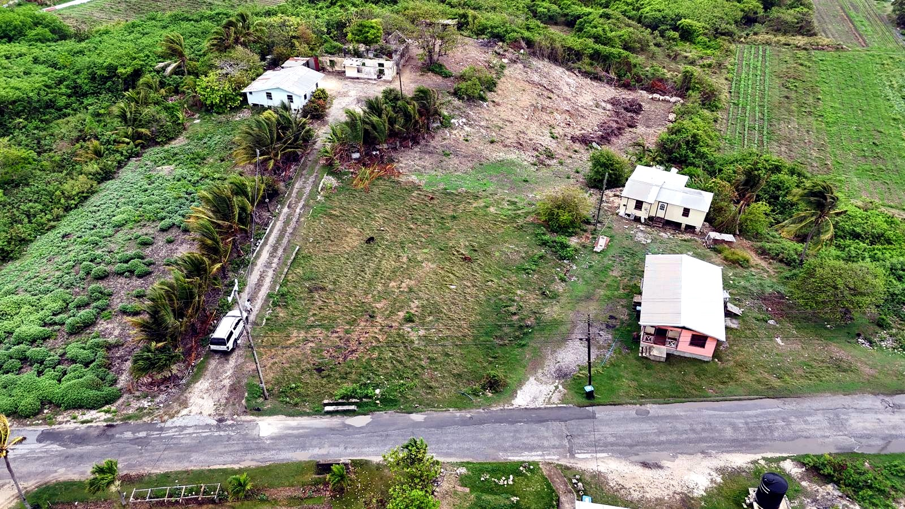
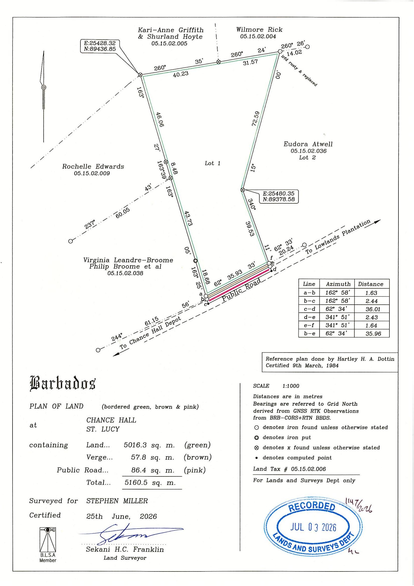

1.26 acres of elevated land with sweeping north coast ocean views and centuries-old heritage buildings.
Set on 1.26 acres (approximately 54,885 sq ft) of elevated land in Chance Hall, St. Lucy, this property offers almost 180 degrees of unobstructed views across the spectacular northern coastline. The land carries genuine historic character, with heritage buildings constructed centuries ago still standing on site — a rare combination of scale, setting, and story that is increasingly difficult to find on the island.
Whether the vision is to restore a piece of Barbadian history, design a private retreat, or develop a boutique estate against a historic backdrop, this parcel offers an exceptional canvas to build on. Frontage onto the public road provides straightforward access, with the quiet surrounding countryside of St. Lucy adding to the sense of privacy and space.
Figures are provided by the seller and drawn from the certified 2026 land survey; buyers should verify all boundaries, structures and title independently before purchase.
The land was surveyed and certified on 25th June 2026 by Sekani H. C. Franklin, Land Surveyor, showing Lot 1 at Chance Hall, St. Lucy — 5,016.3 sq m of land plus 57.8 sq m of verge and 86.4 sq m of public road, for a certified total of 5,160.5 sq m (approximately 55,540 sq ft).

Located in St. Lucy, on the northern tip of Barbados, Chance Hall sits along a quiet stretch of countryside near Lowlands Plantation, prized for its elevated outlooks over the rugged north coast — a setting well known for dramatic ocean views and a slower pace of life away from the busier south and west coasts.
Map is approximate and centered on Chance Hall, St. Lucy. Exact boundaries are shown in the certified plan of land above.
Reach out by email and our team will follow up with more details, photos, or to schedule a viewing.